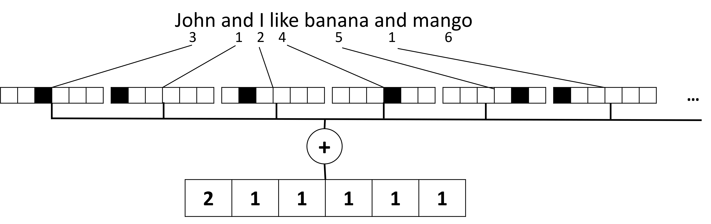

将文本表示为张量
课前测验
文本分类
在本节的第一部分中，我们将重点关注文本分类任务。我们将使用AG News数据集，该数据集包含如下的新闻文章：
- 类别：科技
- 标题：Ky. 公司赢得研究肽的资助（AP）
- 正文：AP - 一家由路易斯维尔大学的化学研究员创立的公司赢得了一项开发资金...
我们的目标是根据文本将新闻条目分类到某一个类别中。
表示文本
如果我们想用神经网络解决自然语言处理（NLP）任务，我们需要某种方法将文本表示为张量。计算机已经使用诸如ASCII或UTF-8之类的编码，将文本字符表示为映射到屏幕字体的数字。

作为人类，我们理解每个字母代表的意思，以及所有字符如何组合成一个句子的单词。然而，计算机本身并没有这种理解，并且神经网络必须在训练期间学习含义。
因此，我们在表示文本时可以使用不同的方法：
- 字符级表示，我们将文本表示为每个字符作为一个数字。假设我们的文本语料库中有C个不同的字符，那么单词Hello将表示为5xC的张量。每个字母对应一个one-hot编码的张量列。
- 词汇级表示，我们在其中创建文本中的所有单词的词汇表，然后使用one-hot编码表示单词。这种方法在某种程度上更好，因为单个字母本身没有太多意义，因此通过使用更高层次的语义概念——单词——我们简化了神经网络的任务。然而，鉴于词典的大小很大，我们需要处理高维稀疏张量。
无论采用哪种表示方式，我们首先需要将文本转换为标记序列，一个标记可以是一个字符、一个单词，有时甚至是一个部分单词。然后，我们使用词汇表将标记转换为数字，通常使用one-hot编码，这个数字可以输入神经网络。
N元语法
在自然语言中，单词的精确含义只能在上下文中确定。例如，神经网络和捕鱼网的含义完全不同。考虑这一点的一种方法是构建基于单词对的模型，并将单词对视为独立的词汇标记。这样，句子I like to go fishing将表示为以下标记序列：I like，like to，to go，go fishing。这种方法的问题是词典大小显著增长，并且像go fishing和go shopping这样的组合由不同的标记表示，尽管它们具有相同的动词，但没有任何语义相似性。
在某些情况下，我们还可以考虑使用三元语法——三个单词的组合。因此，这种方法通常被称为n元语法。此外，在字符级表示中使用n元语法也是有意义的，在这种情况下，n元语法大致对应于不同的音节。
词袋和TF/IDF
在解决诸如文本分类之类的任务时，我们需要能够使用一个固定大小的向量表示文本，我们将使用该向量作为最终密集分类器的输入。最简单的方法之一是结合所有单词的表示，例如通过将它们相加。如果我们对每个单词的one-hot编码求和，我们将得到一个频率向量，显示每个单词在文本中出现的次数。这种文本表示称为词袋（BoW）。

图片作者自制
BoW本质上表示在文本中出现的单词及其数量，这确实可以很好地提示文本的内容。例如，关于政治的新闻文章可能包含单词president和country，而科学出版物可能包含collider，discovered等。因此，单词频率在许多情况下可以很好地指示文本内容。
BoW的问题在于某些常见单词，如and和is，出现在大多数文本中，它们的频率最高，掩盖了真正重要的单词。我们可以通过考虑单词在整个文档集合中出现的频率来降低这些单词的重要性。这就是TF/IDF方法的主要思想，更详细内容在本课附带的笔记中介绍。
不过，这些方法都无法完全考虑文本的语义。我们需要更强大的神经网络模型来完成这项工作，我们将在本节后面讨论。
✍️ 练习：文本表示
在以下笔记本中继续学习：
结论
到目前为止，我们研究了可以为不同单词添加频率权重的技术。然而，它们无法表示意义或顺序。正如著名语言学家J. R. Firth在1935年所说，“一个单词的完整意义总是上下文的，任何脱离上下文的意义研究都不能被认真对待。”我们将在课程的后续部分学习如何使用语言建模从文本中捕获上下文信息。
🚀 挑战
尝试使用词袋和不同的数据模型进行其他练习。你可以从这个在Kaggle上的竞赛中获得灵感
课后测验
复习与自学
在Microsoft Learn上练习你的文本嵌入和词袋技术技能